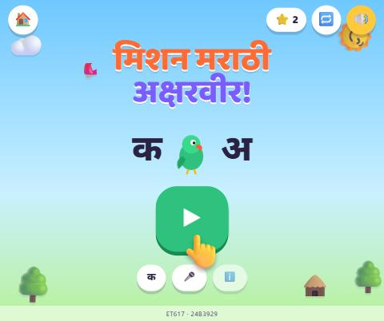
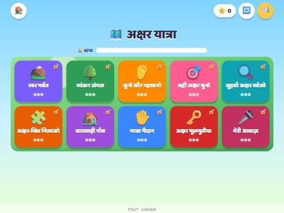
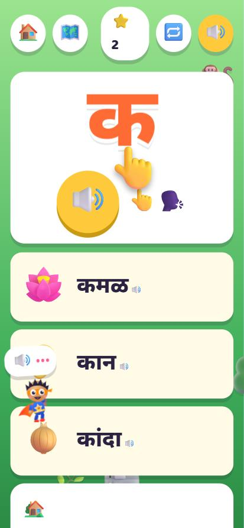
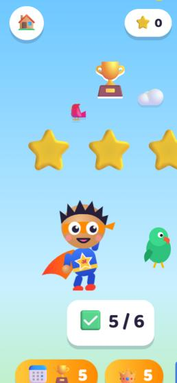
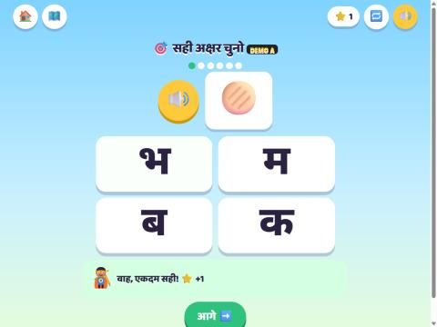
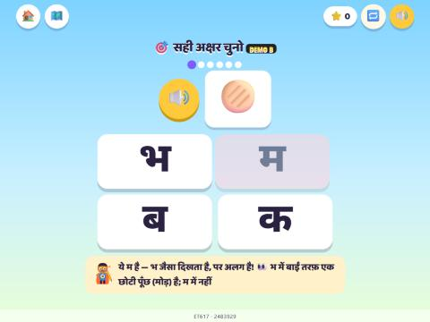
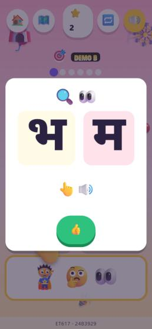
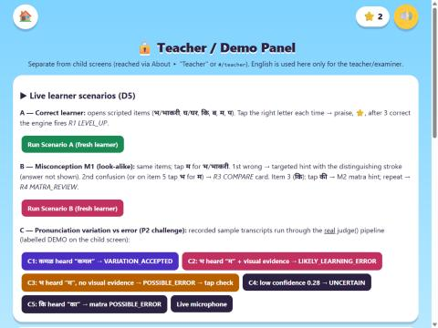
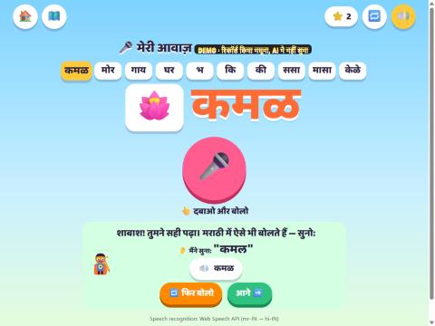
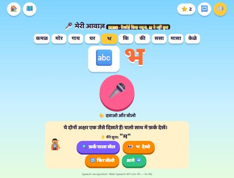

| P · Problem | P2 Contextual language and literacy application (NLP) |
| T · Topic | P2-T1 Marathi: barakhadi / matra recognition for early readers |
| L · Learner context | L2 First-generation learner, low-income settlement, NGO after-school centre with shared tablets |
| C · Constraint | C2 Learner's own language: Hindi, delivered as speech |
| Identity token | 24B3929, shown in the footer of every screen (ET617 · 24B3929) and on the About screen |
Children of Hindi-speaking migrant families in Niphad (Nashik) attend Marathi-medium schools but hear only Hindi at home. By Grade 3 many still cannot recognise Marathi letters. They confuse look-alikes (घ/ध, भ/म, ब/व) and do not notice that a matra changes the sound (क → का → कि). Classroom explanations in Marathi do not reach them, and being corrected in public makes them stop trying. Their NGO centre has shared tablets but no tool that teaches Marathi letters through the language they understand, spoken Hindi, and listens to them read without punishing their accent.
Concept explanation (spoken by the mascot): "हर अक्षर की अपनी आवाज़ है — क, जैसे कमळ।" · "भ और म एक जैसे दिखते हैं, पर भ में बाईं तरफ़ छोटी पूँछ है।" · "मात्रा लगाने से आवाज़ बदलती है: क + ा = का।"
| # | Format | Task | Answer | Feedback (spoken) |
|---|---|---|---|---|
| 1 | Picture → letter | भाकरी: choose from भ म ब क | भ | "वाह, एकदम सही!" · M1 chose म: "भ में बाईं तरफ़ छोटी पूँछ है; म में नहीं", then retry |
| 2 | Picture → letter | घर: घ ध प स | घ | M1 chose ध: "घ के ऊपर लकीर पूरी जुड़ी है" |
| 3 | Sound → syllable | hear कि: कि की का के | कि | M2 chose की: "अक्षर सही है, बस मात्रा बदलो", and कि is replayed |
| 4 | Picture → letter | मासा: म भ स न | म | A repeated भ/म mix-up opens a side-by-side comparison card |
| 5 | Drag matra | म ▢ र: drag ो / ा / ौ | मोर | M2 placed ा: "ये बना मा… शब्द फिर सुनो" |
| 6 | Matching | tap letter → picture (e.g. क–lotus, ग–cow, स–rabbit) | pairs | A wrong pair names the picture and replays its first sound |
| 7 | Read aloud | say कमळ | कमळ / कमल | variation "शाबाश! ऐसे भी बोलते हैं — कमळ" |
Scaffolding: 1st error → a targeted hint, with the answer not shown · 2nd error → the right option glows · repeated pattern → an adaptation rule (D6).
URL: https://et617-24b3929.vercel.app. A static React + Vite site on Vercel, with no backend and no API keys.
Games: 1 Listen & identify · 2 Picture → letter (+ matra mode) · 3 Find the twin (look-alikes) · 4 Letter–picture match · 5 Barakhadi builder · 6 Drag the matra (touch drag or tap-tap) · 7 Letter maze · 8 Read aloud (speech recognition).




Progress is stored only in the tablet's localStorage, with no names and no server. It feeds the adaptation, the speech judge's visual evidence, the D8 logs and high scores. "Reset learner" clears it for the next child.






Note: some screenshots were captured before the voice-first redesign and still show on-screen Hindi text. The flow and decisions are the same.
Speech recognition + judge (NLP) · src/lib/speech.js | |
|---|---|
| What it does | Transcribes the child reading a word or syllable aloud and decides whether this is a learning error or acceptable variation. |
| Model call | rec = new webkitSpeechRecognition(); rec.lang = 'mr-IN'; rec.maxAlternatives = 5; rec.start(), retried with 'hi-IN'. This is the browser's cloud recogniser: no backend, no key. |
| Input → output | About 7 s of mic audio → up to 5 {transcript, confidence} in Devanagari. |
| Checked before the child sees it | Rule-based judge():
① exact match CORRECT → ② match after variation rules (ळ→ल, ि/ी, ु/ू, ण→न, श→स) VARIATION_ACCEPTED → ③ confidence < 0.45 UNCERTAIN → ④ a look-alike was heard: with ≥ 2 matching visual tap errors LIKELY_LEARNING_ERROR, otherwise POSSIBLE_ERROR plus a tap check → ⑤ TRY_AGAIN. The child hears only a short Hindi line. The full trace is shown in the Teacher panel. |
| If it is wrong | A recogniser mistake can only lead to "uncertain / try again / tap check". It never marks the child wrong. An error is concluded only when the visual tasks agree. |
| If it fails | No support, offline or mic denied → "no-mic mode · no AI check" (listen, repeat aloud, confirm). Teacher demos inject recorded samples into the same judge(), labelled DEMO. |
audio.jsmodel.js| Outcome | Assessment | Data logged (anonymous, on device) | Success |
|---|---|---|---|
| LO1 Identify | 10-item sound → letter test with look-alikes, pre and post | accuracy, chosen distractor, response time, attempts | ≥ 80 %; look-alike errors halved |
| LO2 Matras | 4 matra-choice + 4 drag-the-matra items | matra errors per consonant, hints | ≥ 75 %; ≤ 1 ि/ी mix-up |
| LO3 Associate / read | 5 picture matches + 5 read-aloud words | matches, speech decisions and transcripts | ≥ 4/5 matches; ≥ 3/5 words accepted |
Design: about 15 children; pre-test → 2 weeks (4 × 15 min a week) → post-test → retention test 1 week later, plus a facilitator's confidence rubric. Success: ≥ 70 % of children meet all three thresholds and keep ≥ 80 % of their gain at retention.
Tool: Claude Code (Anthropic), a single session on 18 Nov 2026 from about 19:00 IST. The chat export is attached on Moodle.
| Stage | What the AI did · what I decided |
|---|---|
| Planning | Drafted DESIGN.md from my card, persona notes and the exam PDF. |
| Content | Proposed the word list, look-alike pairs and Hindi lines. I kept conventional Marathi chart words and invented none. |
| Code & UI | Wrote the React app, speech judge, adaptation rules and the original SVG mascot, then deployed to Vercel. |
| My iterations | ① The learner cannot read Hindi either, so I requested voice guide, demo hand, no text, animated scenes. ② Added a mascot reaction to incorrect answers and session high scores. ③ An original mascot was used instead of a copyrighted cartoon character. |
| Testing | Ran scenarios A, B and C on the live URL. Fixed the look-alike counter so the compare rule fires correctly. |
Reflection: AI assistance made it feasible to build eight activities within two hours, but its output had to be checked against my card (no reading required, C2 as speech) and for linguistic accuracy. I describe the NLP honestly: it is the browser's recogniser plus my own rules, with a labelled fallback, and demo samples are always marked. Not done: testing with children, and checking the mic and Marathi voice on a real tablet.